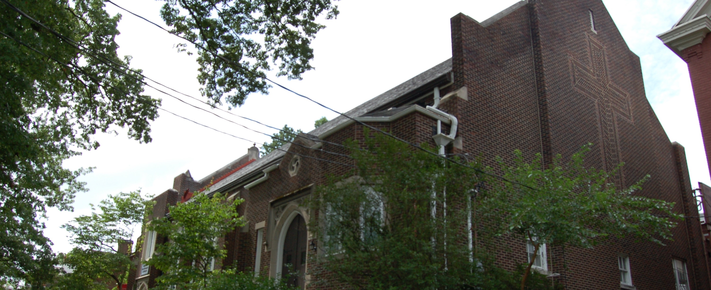
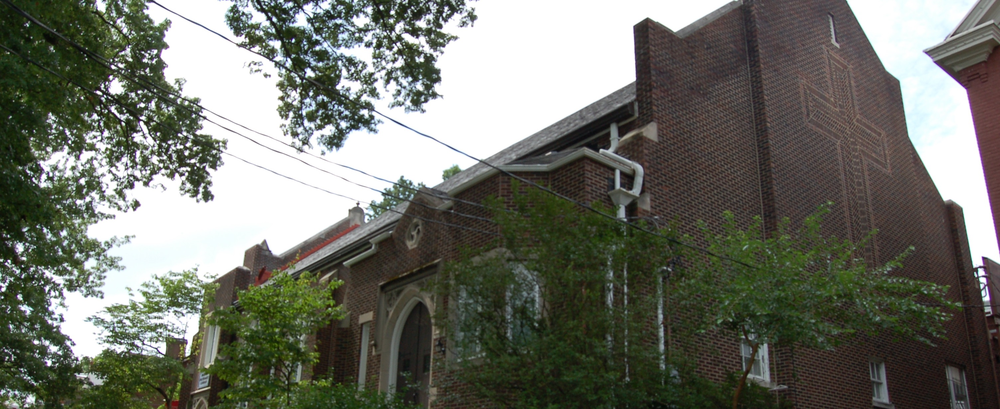
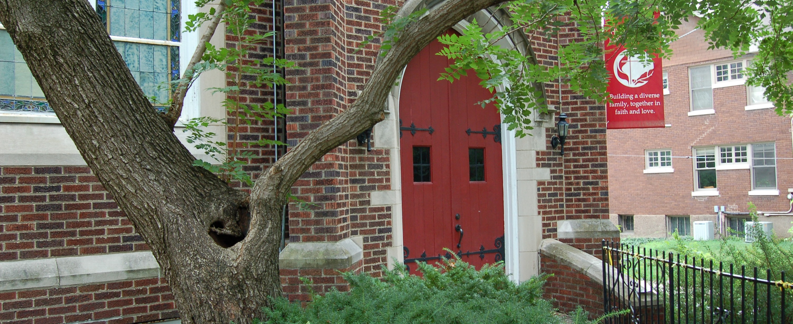
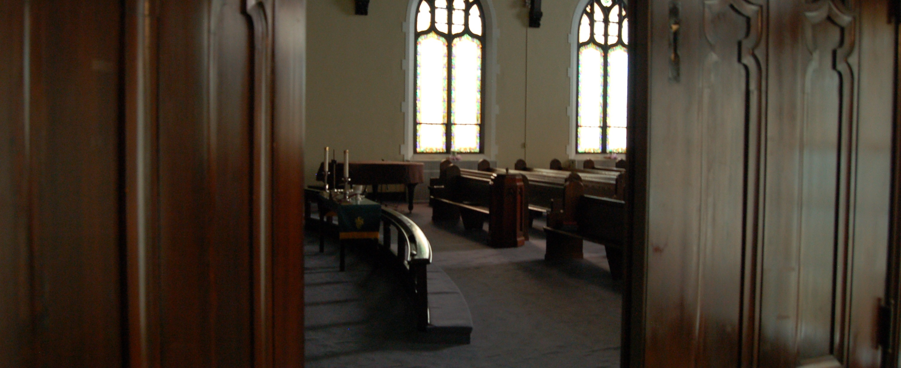
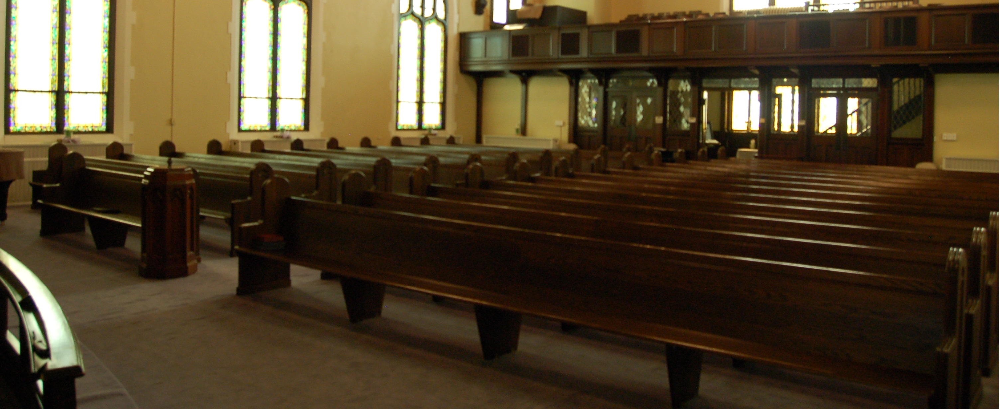
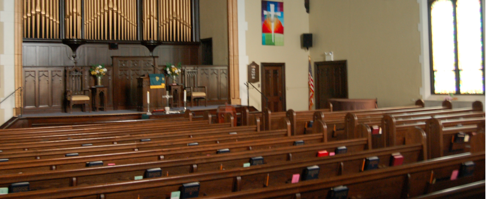
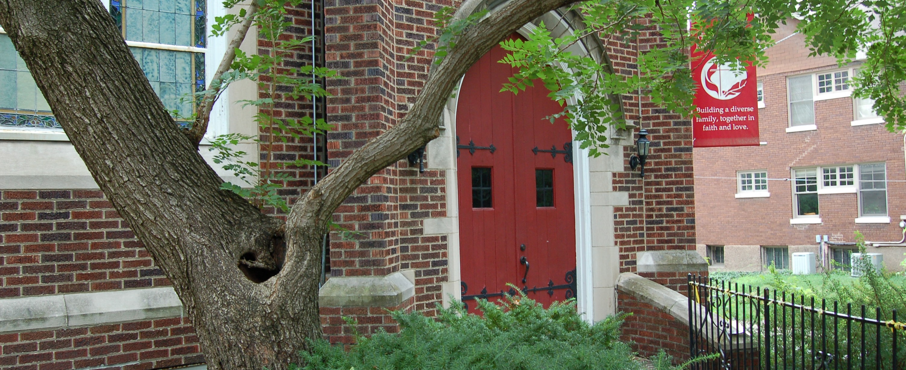
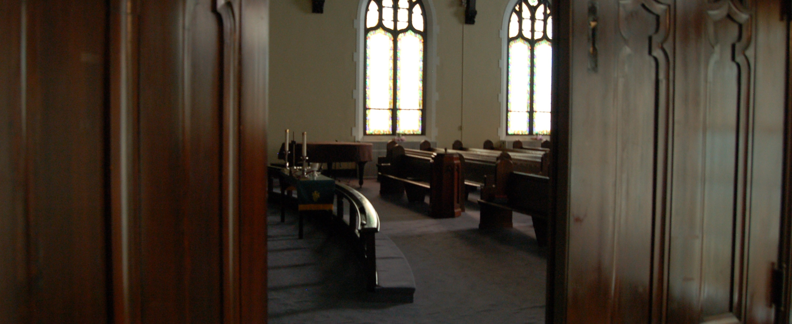
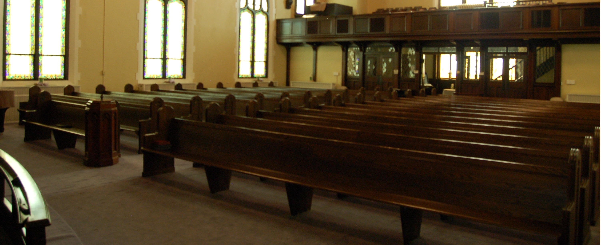
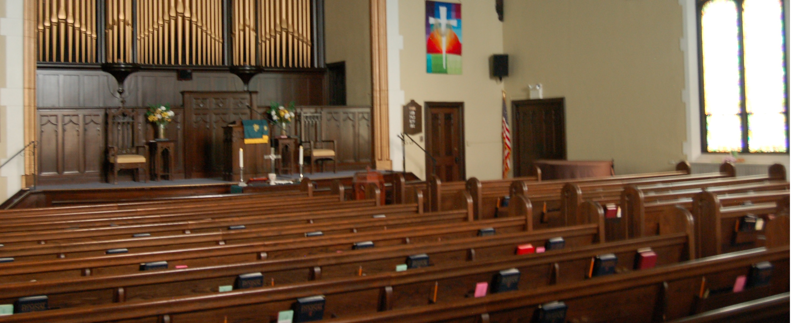

PASTOR'S WELCOME
On behalf of Highland United Methodist Church in Louisville, I welcome you in the name of the Father, Son and Holy Spirit. Our church family has been together and serving God and our community for the past 120 years.
We look forward expectantly to the next 120 years and we would love to have you join us as we journey together with God leading us, to discover what it means to be deformed, reformed and transformed into the image of Christ.
Come and be blessed. Come as you are. We would love to have you join us as we worship our resurrected Lord and Savior, Jesus Christ!
With love,
Eugene Quek
Lead Follower
 



 






